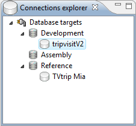
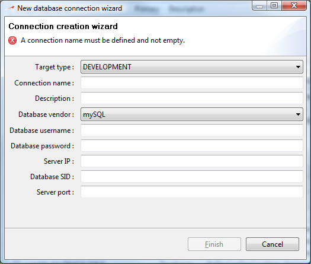

Before we start with synchronization, you need to define a development database connection which will be required by the synchronization engine. You might already have a development database definition if you have created your current view by importing an existing database schema. If so, you can skip this step and go directly to the next topic.
Existing connection definitions are listed in the Connections explorer view which should appear at the lower right corner of your environment. This view lists existing database connection definitions and allows you to create new connections.

You can notice that connections are named database targets and that these connections are typed by the environment they represent. For now, we will only focus on development connections as they are the only connections used by the synchronization engine.
At the moment, you can only have 1 connection definition per target type.
To create a new development target, right click on the development item and select Database connection from the popup menu. This will make the connection wizard come up :

This dialog contains all information needed to connect to a database and should look like what you are used to when you define a connection with any SQL-client tool. Define your database connection properties in the dialog and click finish to complete the operation.
Congratulations : you have created a new target connection!
You can edit any connection listed in the Connections explorer view by double-clicking on the connection you want to edit. The same Connection wizard dialog as the Connection creation wizard will appear initialized with the connection you clicked.
Modify any connection property and click finish to commit changes.
You can easily list target database contents by right-clicking a connection and selecting the Capture target item. It will load the database structure from the connection and lists all structural objects in the connection hierarchy. Note that you cannot edit the structure of a database target directly.